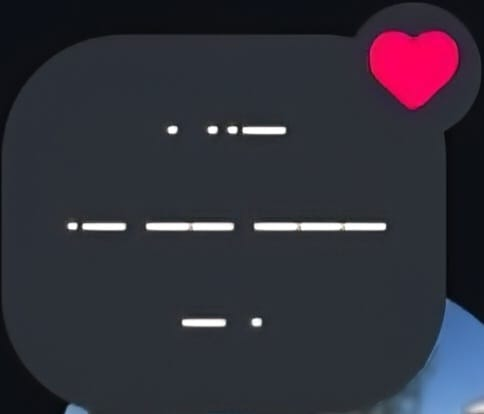
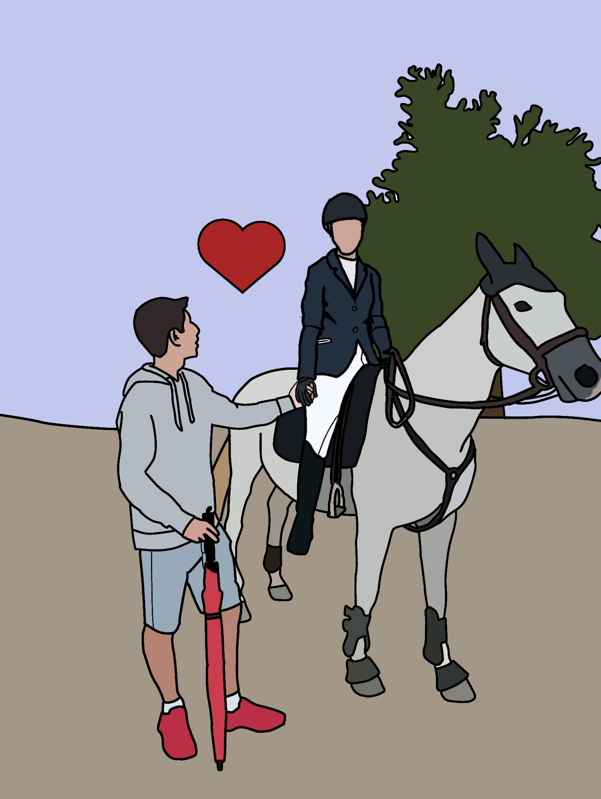
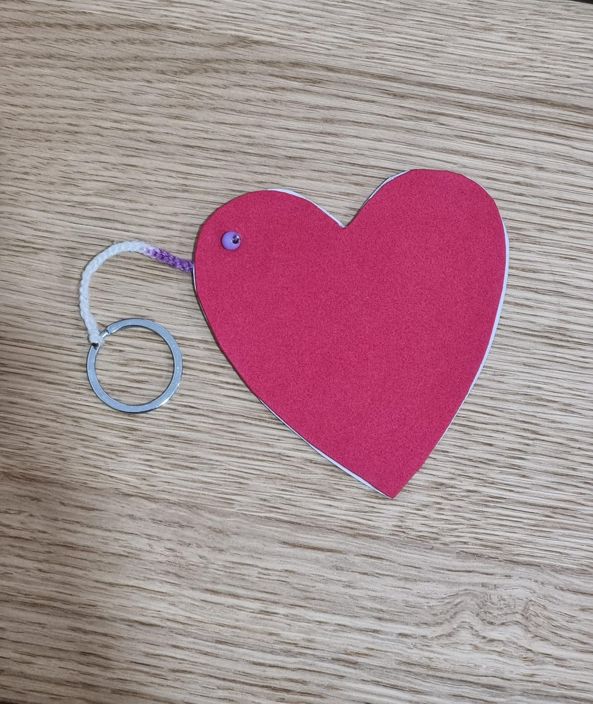

Haviam tantos presentes só porque sim que eu criei um site para juntar todos em vez de cada um ter o seu
próprio. Tenho a certeza que este vai ser o maior texto, vou falar de cada um por ordem em que os demos.
1º presente: uma nota em código morse que diz "Eu amo te", super fofa
2º presente: uma flor que desenhaste com "eu amo-te" em línguas diferentes, gostei mesmo muito e
guardei logo a imagem
3º presente: um desenho que eu fiz para ti de uma foto nossa contigo montada num cavalo e eu ao
teu lado
4º presente: um coração feito de esponja para colocarmos o perfume um do outro e sentir o cheiro
mesmo estando longe, fizeste outro para ti. Eu acho muito fofo gostares tanto do cheirinho e também amo
como o teu perfume me lembra de ti
5º presente: eu dei-te o desenhinho pequeno a dizer "You and Me" e postei a música nas
notas, guardaste o desenho no teu quadro de cortiça (não tenho foto disso)
6º presente: uma carta enorme a declarar-te e a agradecer por tudo, eu tenho lido essa carta
várias vezes e sinto-me sempre tão bem depois que a leio
7º presente:Em dezembro houve presentes fofos, talvez tenha sido por isso que ambos nos
esquecemos do
presente de 8 meses hahahaha, mas não, deve ter sido por causa do Natal. No dia 13 tiveste
concerto e eu fui ver, então, decidi fazer-te uma surpresinha e dei-te um ursinho de origami (também não
tenho foto)
8º presente: E no dia 15, deste-me um presente que eram vários corações cada vez maiores sendo o
maior o teu amor por mim, não estava à espera desse presente, adorei
9º presente: Está a ser feito 😉



